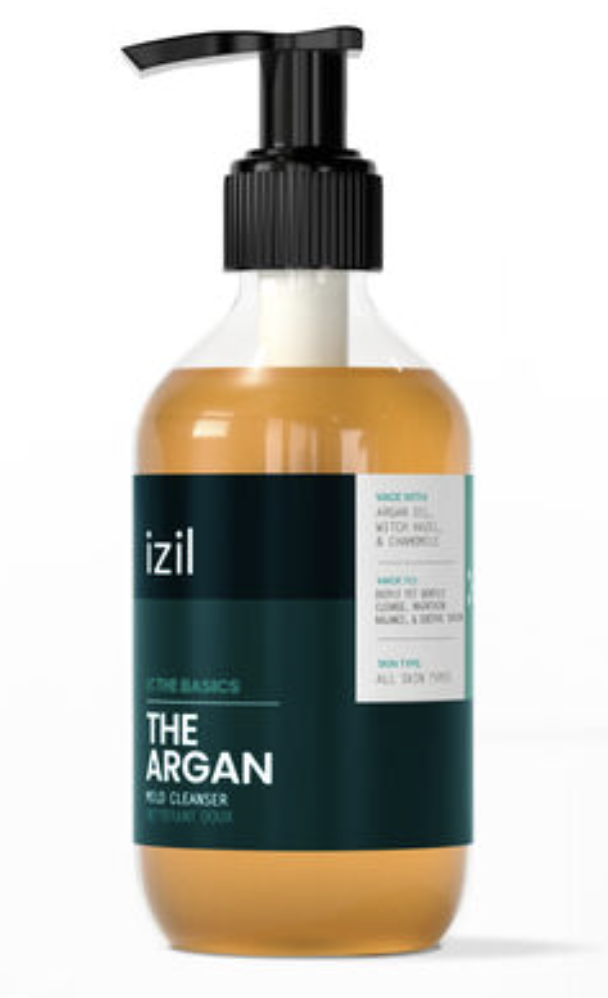
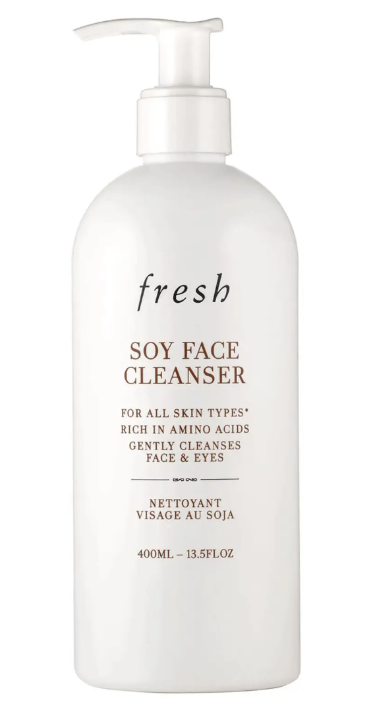
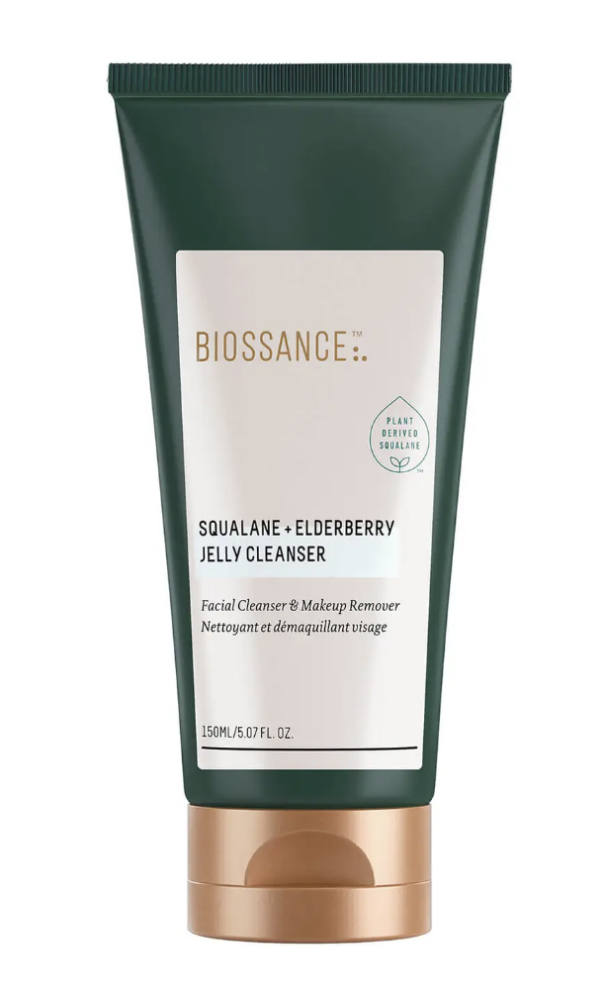

meta name="description" content="أفضل غسول للوجة" />
01.
Beauty Of Joseon Green Plum Refreshing Cleanser
تنظيف مكثف - يزيل الجلد الميت، يزيل الشوائب ، الزيت الزائد ، وأي مكياج متبقي.
تعزيز الترطيب: يساعد على الاحتفاظ بالتوازن المناسب لرطوبة الجلد
شراء المنتج

02.
The Argan Mild Cleanser
الحماية المضادة للأكسدة: تساعد على حماية البشرة من الجذور الحرة والأضرار البيئية.
هدئ: مستخلص الصبار وكينتيللا اسياتيكا ، وهما مادتان لهما خصائص مهدئة.
شراء المنتج
03.
PanOxyl Acne Foaming Wash Benzoyl Peroxide
نتائج سريعة المفعول: عند استخدامه باستمرار ، يمكن أن ينتج عن البنزويل بيروكسايد في الفاعلية العالية لهذا المنتج نتائج في ومضة.
.استخدام متعدد الأغراض: يمكن استخدامه للوجه والجسم
شراء المنتج

04.
The Fresh Soy Face Cleanser
التطهير اللطيف:
يزيل المكياج بشكل فعال دون إزالة الترطيب الطبيعي للبشرة.
.
نوع البشرة: يمكن استخدامه لجميع أنواع البشرة
شراء المنتج
05.
First Aid Beauty Face Cleanser
استخدام متعدد الأغراض: يمكن استخدامه للوجه والجسم.
.
ترطيب وترطيب: منظف يساعد على ترطيب البشرة وترطيبها
شراء المنتج

06.
Biossance Squalane and Elderberry Jelly Cleanser
التقشير اللطيف: يساعد على تنظيف المسام المسدودة وإزالة خلايا الجلد الميتة.
الحماية المضادة للأكسدة: يضاف مستخلص نبات البلسان المشهور بقدراته المضادة للأكسدة إلى المطهر لتوفير حماية إضافية من مضادات الأكسدة.
شراء المنتج
07.
Fresh Soy Face Cleanser Limited Edition
تركيبة متوازنة مع درجة الحموضة: يتم الحفاظ على التوازن الطبيعي للبشرة من خلال مستوى الأس الهيدروجيني الذي يتم تعديله ، مما يمنع الجفاف المفرط أو تجريد الزيت ويعزز صحة البشرة وقوتها.
نوع البشرة: يمكن استخدامه لجميع أنواع البشرة.
شراء المنتج
{kind=link}
{kind=link}
{kind=link}
{kind=link}
{kind=link}
{kind=link}
{kind=link}